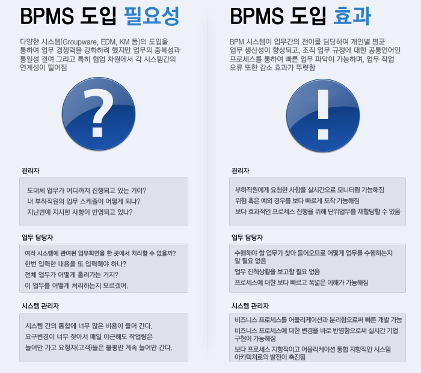

<link rel="import" href="../../bower_components/polymer/polymer.html">

<script src="../../bower_components/webcomponentsjs/webcomponents-lite.min.js"></script>


<!-- // CSS Reset – http://meyerweb.com/eric/tools/css/reset/ -->

    


<dom-module id="uengine-about-bpm">
  <template>


  <style is="custom-style" include="demo-pages-shared-styles">
      #container {
        max-width: 600px;
      }

      .image {
        @apply(--layout-flex);
        background-repeat: no-repeat;
        background-position: center center;
        background-size: contain;
        margin-top: -10px;
        margin-bottom: 35px;

      }


     
    </style>

    <br>
    <br>
    <div style="text-align: center">
      
    </div>
   
   </template>

  <script>
    Polymer({
      
 
      properties:{
       is: 'uengine-about-bpm',
        page: String
      }
    });

 
    
  </script>


</dom-module>
